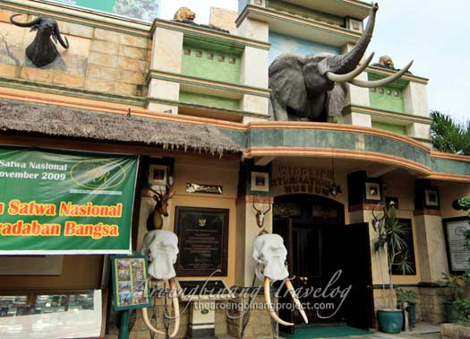
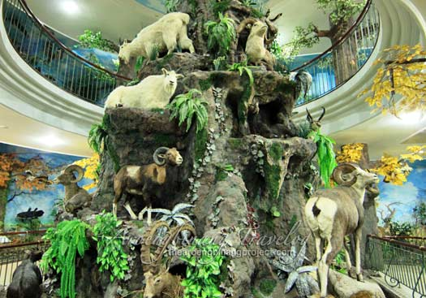
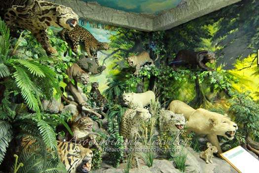

Rahmat International Wildlife Museum & Gallery adalah merupakan sebuah tempat wisata yang sangat menarik dan unik di Kota Medan, Sumatera Utara. Museum dan galeri ini menyimpan beragam koleksi mengagumkan terdiri dari berbagai binatang liar diawetkan yang berasal dari tempat berburu di berbagai tempat di seluruh penjuru dunia.

Sekitar 2000 lebih binatang, besar dan kecil, ditata dengan amat artistik dan elegan sesuai dengan habitat mereka di dalam ruangan-ruangan berpendingin penuh di dalam gedung Rahmat International Wildlife Museum & Gallery. Lokasi museum yang langka ini berada di sebuah gedung di Jl. S. Parman 309, Kota Medan, Sumatera Utara

Tampak muka dan pintu masuk ke Rahmat International Wildlife Museum & Gallery waktu itu, yang mungkin saat sudah berubah menjadi lebih baik. Boks penjualan tiket berada di sebelah kanan tempat parkir. Tiket masuk adalah Rp.25.000 per orang, ditambah Rp.10.000 untuk night safari, jika mau, dan Rp.20.000 jika ingin memotret.
Di bagian depan ruangan museum terdapat beberapa buah memorabilia atau kenang-kenangan yang dipajang pada meja dan dinding, bersebelahan dengan sebagian dari koleksi Rahmat International Wildlife Museum & Gallery. Koleksi burung diletakkan dalam sebuah kelompok yang disebut Pheasants of the world yang ditata dengan sangat artistik.

Ada pula koleksi menarik yang diberi judul The African Big Five, atau lima binatang besar asal Afrika, yang terdiri dari Banteng, Gajah, Cheetah, White Rhino dan Singa. Koleksi The African Big Five menjadi salah satu pajangan mengesankan di museum ini. Cheetah tidak hidup di Indonesia, dan White Rhino kemungkinan besar juga tidak ada.
Kambing gunung dengan tanduk melengkung cantik ini berada dalam koleksi kelompok The goats of mountain Rahmat International Wildlife Museum & Gallery. Penataan berbagai koleksi binatang yang sesuai dengan habitatnya, serta binatang pajangan yang semuanya asli dan dalam kondisi yang sangat baik adalah kekuatan utama dari museum ini.
Berbagai jenis binatang kucing, baik yang berukuran kecil maupun yang besar, ada dalam koleksi Cats of the World. Macan, Macan Tutul, Cheetah, Singa dan sejenisnya merupakan binatang buas yang keberlangsungan hidupnya terdesak hebat oleh tumbuh pesatnya permukiman penduduk dan pembabatan hutan di banyak tempat di dunia ini.
Rahmat International Wildlife Museum & Gallery dilengkapi perpustakaan jenis satwa dan habitatnya dari berbagai negara, Gift Shop cindera mata, Hunters Cafe dengan Audio Visual tentang perburuan konservasi, Studio Photo dengan fotografer profesional, dan Multi Function Room lantai 3 dengan koleksi para legendaris dan maestro dunia.
Rahmat International Wildlife Museum & Gallery
Jl Letjen S Parman 309, Medan.
Telp: 061-4569964
Tiket (April 2015): Umum Rp.32.000, Anak Rp. 25.000. Rombongan 25+: SD Rp. 9.500, SMP Rp. 16.000, Mahasiswa Rp. 18.000.
Buka Selasa s/d Minggu: 09.00 — 17.00 WIB. Senin Tutup.